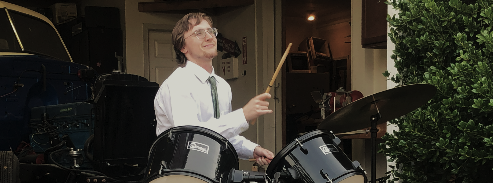

That's me! I'm Alex. I'm a recent graduate of Cal Poly SLO. I'm 22 and I live in Bellevue, Washington.What are you up to?
I think a lot about game design, especially with regard to personal expression. I want to understand games' ability to convey meaning. I work on small prototypes that explore these ideas. I write short songs. I love texture and instrumentation. I love to program. I like to build tools. My games mostly use custom, from-scratch engines. I also like to shoot short films. I like art that is simple and small but still holds truth.What tools do you use?
Vim Jai RemedyBG Aseprite Logic Akai MPK49 Final Cut iPhone 8What kinda art do you like?
Games - Morrowind | Bethesda Game Studios - The Witness | Jonathan Blow - Into The Breach | Subset Games - Fire Emblem IV | Intelligent Systems - Everyday Shooter | Jonathan Mak - Hoplite | Douglas Cowley Films - Wolf Children | Mamoru Hosoda - Mind Game | Masaaki Yuasa - Sonatine | Takeshi Kitano - The Wind Rises | Hayao Miyazaki - Bottle Rocket | Wes Anderson - Tatami Galaxy | Masaaki Yuasa Albums - Hejira | Joni Mitchell - Hosono House | Haruomi Hosono - Wolf Children | Masakatsu Takagi - All Hail West Texas | The Mountain Goats - For Lovers | Lamp - Paul Simon | Paul Simon - Cowboy Bebop OST | Yoko Kanno + The Seatbelts Books - Kirawareru Yuuki | Ichiro Kishime and Fumitake Koga - Siddhartha | Herman Hesse - Elric of Melnibone | Michael Moorcock - The Tao Te Ching | Lao Tzu - Invisible Cities | Italo Calvino - The Pearl | John Steinbeck - Essays | Ralph Waldo EmersonHere's some ideas I believe in:
No blame. Human beings are radically free. Experience your own subjective reality. Ambition is the only healthy manifestation of dissatisfaction. Boredom is good - brings clarity. We seek input because we fear output. Research is for off-days. Resources are for emergencies. Everything is compound interest. Seek truth. Disregard other results. Games are learning. Small numbers. Light touch. The world has an endless supply of generosity. Tap in.What do you want out of life?
Right now, I want clarity, time, and peace. I want to explore areas of interest. At the moment, that's games and music. Life is a wonderful exploration! Someday soon, I would like to dedicate my heart and soul to something specific. Anyways, it's nice to meet you!